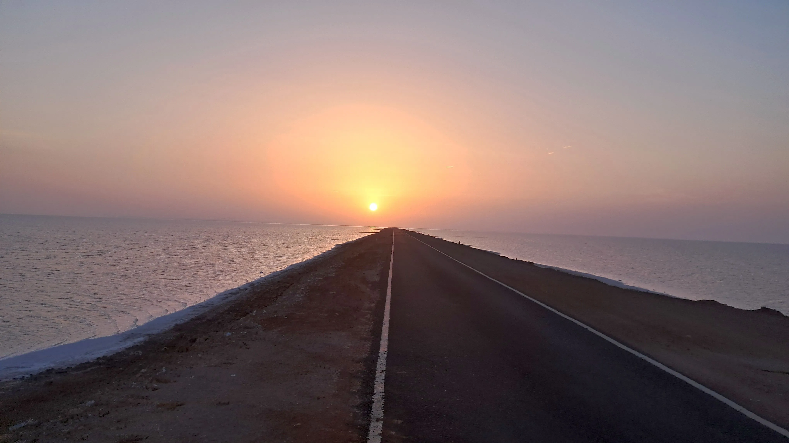
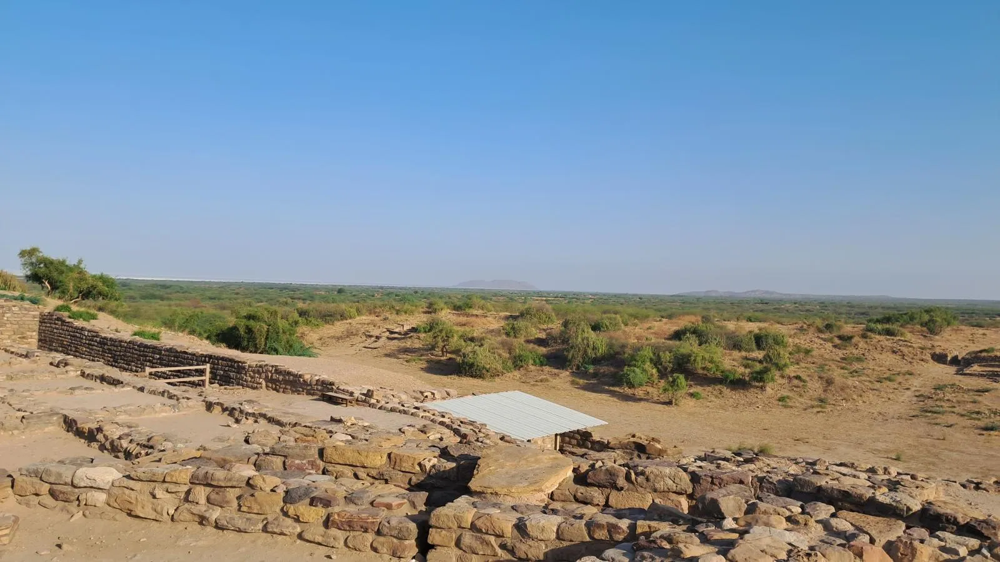
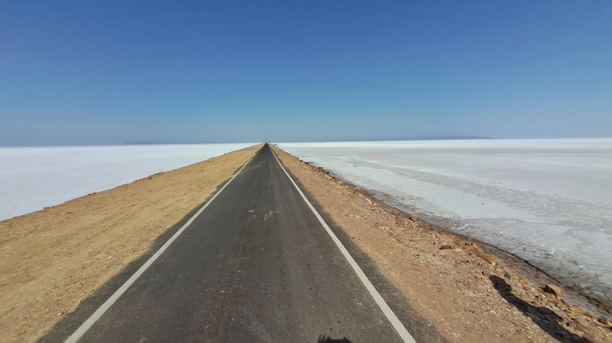
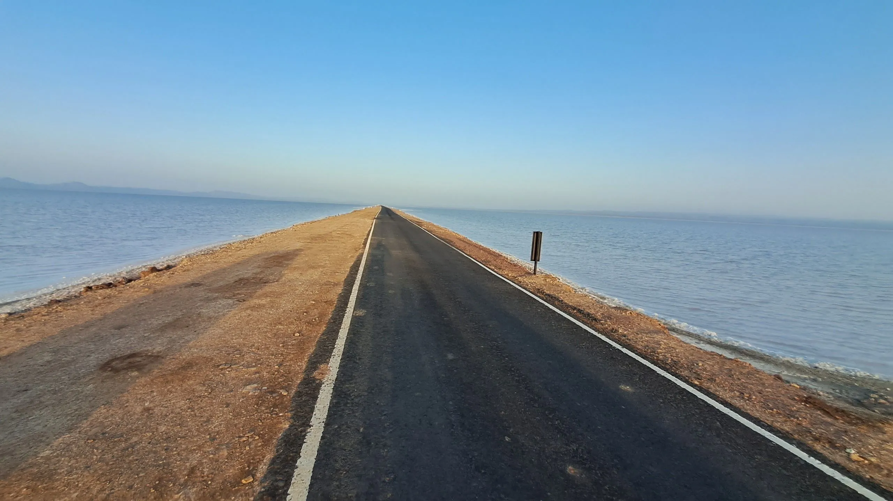

The Road to Heaven is a stunning 30-km stretch of straight tarmac cutting through the middle of the Great Rann of Kutch, running from Khavda to Dholavira island. During the right season, water from the Rann floods the low-lying land on both sides of the road, creating a breathtaking mirror effect — the road appears to float between two reflections of the sky, earned it the title "Road to Heaven." Flamingos and other wading birds add to the surreal atmosphere. It is one of the most cinematic drives in all of India.
Who Should Visit
- Photographers & Filmmakers : The mirror-reflection effect and vast open skies create unmatched photographic opportunities.
- Nature Lovers : Spot flamingos, pelicans, and other migratory birds on both sides of the road during winter.
- Road Trip Enthusiasts : One of the most unique and scenic drives in India — absolutely unmissable for road-trippers.
- Heritage Seekers : The road leads directly to Dholavira, a UNESCO World Heritage Site and one of the largest Harappan cities.
How to Reach
- From Bhuj : Drive 80 km north to Khavda town (well-paved road). The Road to Heaven begins just past Khavda.
- By Car : Any vehicle can navigate the road. The entire stretch is paved and flat — perfect for sedans and SUVs alike.
- Best Strategy : Start from Bhuj in early morning to reach Khavda by sunrise, drive the road in golden hour light, and continue to Dholavira for the UNESCO site.
- Fuel : Fill up in Bhuj or Khavda. There are no petrol stations on the road itself.
Landmarks & Highlights
What makes this drive extraordinary
The Mirror Effect
During the post-monsoon season (Oct–Dec), the flooded Rann creates a perfect mirror on both sides, making the road look like it floats between two skies.
Flamingo Colonies
Thousands of Greater and Lesser Flamingos gather in the shallow waters on either side of the road, creating a stunning pink spectacle visible from your car window.
Endless Horizon
The road stretches straight to the horizon in both directions — on a clear day you can see 15–20 km ahead, a rare and meditative experience in India.
Dholavira (End Point)
At journey's end lies the UNESCO World Heritage Harappan city of Dholavira — 5,000 years old and one of the best-preserved Indus Valley sites in the world.
Curated Local Advice
🌅 Best Time of Day
Drive at sunrise or golden hour (1 hour before sunset). The colors, light, and mirror reflections are at their most magical during these windows.
📅 Best Season
October to January is the peak season — water still covers the Rann edges, flamingos are present, and temperatures are comfortable (18–28°C).
🍱 Carry Food & Water
There are NO restaurants, shops, or water stalls on the 30-km stretch. Carry sufficient water and snacks. The nearest food is at Khavda or Dholavira.
🏨 Stay
Dholavira (at the road's end) has Toran Resort and a few homestays. Khavda (start) offers basic facilities. Bhuj has all hotel options.
Shopping & Crafts
- Dholavira Village : Authentic Kutchi embroidery (Ahir & Rabari patterns) and beadwork from local artisans at the journey's end.
- Khavda Town : Local craft cooperatives selling mirror work, rogan art prints, and woven items at fair prices.
Local Eats
- Khavda Sweets : Try the famous 'Mavo' at Khavda town before entering the road.
- Limited Options : No restaurants on the 30-km stretch itself — plan ahead.
- Dholavira Eats : Toran Resort serves authentic Kutchi thali with bajra rotla and dal dhokli.
- Carry Snacks : Bring water, dry fruits, and snacks for the drive.
When to Visit
October to March (Best):
The water level is perfect — neither too dry nor flooded — creating the beautiful mirror effect. The flamingos arrive around November. Days are pleasant (22–28°C) and ideal for outdoor exploration.
July to September (Monsoon):
The Rann floods extensively. The road itself remains drivable, but the iconic mirror effect may be too flooded, and some sections may have water on the road. Not ideal.
April to June (Summer):
The Rann dries up completely — no water, no flamingos, no mirror effect. Extremely hot (40–46°C). Avoid this period.
Nearby Places to Visit
Location & Gallery





